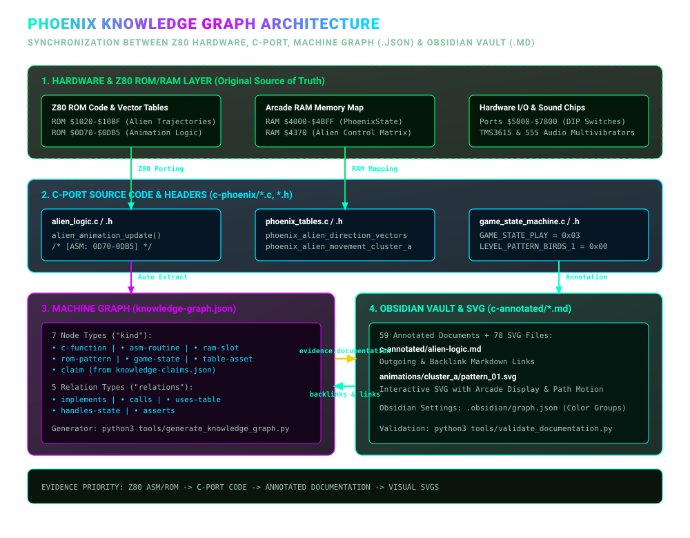
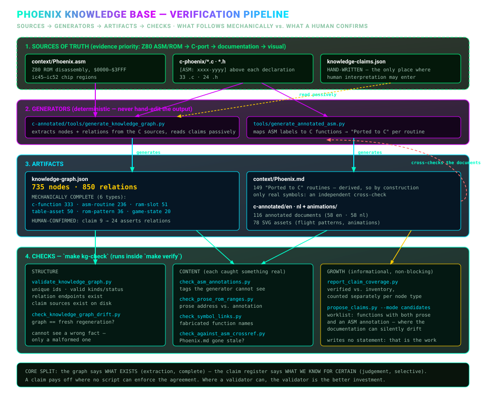

Welcome to the C & Header-Annotated Knowledge Graph
Documentation for the C port of the Phoenix Arcade
Game (c-phoenix).
This directory contains a complete collection of 56 in-depth
annotated documents (32 .c source files + 24
.h header files), analyzing every component of the project
down to function, memory map, and hardware port levels with
interconnected links.
The goal of this documentation suite is to provide a navigable, interactive Knowledge Graph covering the ported C codebase of Phoenix.
Each function, structure, and header in every document is equipped with:
$4370, $4B50), registers, flags, and
bitwise masks.[phoenix_state.h](../../phoenix_state.h#L8)).The source of truth is, in this order: Z80 ASM/ROM → C-port → annotated analysis → visual explanations. Technical conclusions should reference relevant ASM ranges, ROM tables, or C routines; conclusions without links are interpretations requiring verification.
The machine-readable core and regeneration instructions are in knowledge-graph.md;
generated data is stored in knowledge-graph.json.
Open the Knowledge
Base Explorer to search the validated graph and follow links between
C functions, Z80 routines, RAM/ROM nodes, states, claims and the
existing documentation. It is generated from
knowledge-graph.json, does not add claims of its own, and
opens directly with file://.
From the 1980 Z80 hardware at the bottom to the browsable notes you are reading now:

Nothing in here is asserted by hand alone. Sources feed generators, generators produce artifacts, and a set of checks keeps the whole chain honest:

Every .c file below has an annotated page here, but they
are not independent: reading one usually means reading two or three
others first. The design-time graphs in ../../context/graphs/
show that structure, generated from the same sources these pages
annotate.
.c file, grouped into architectural clusters. Use
it to see which annotated pages you need alongside the one you are
reading, and which cluster a file belongs to.[ASM: nnnn-nnnn]
tag in their doc comment, the same tag the annotations use. The bridge
between these pages, context/mapping/
and Phoenix.asm.Those graphs are a map, not proof: they come from a textual scan, so read their README for what the scan cannot see.
../../animations/en/README.md
🎬 — Visual animation guide & SVG analysis of all bird
animations and flight trajectories in
c-phoenix/animations/.../../animations/en/animation-trajectory.md
🚀 — Analysis of all prescribed flight patterns, ROM clusters,
vectors, and AI scripts.../../animations/en/animation-trajectory-detailed.md
📐 — Detailed step-by-step coordinate tables on screen grid per
individual pattern.../../animations/en/bird-animations.md
🦅 — Analysis of bird animation phases.phoenix-state-h.md —
Arcade RAM Memory Map (PhoenixState struct, $4000–$4BFF)
(phoenix_state.h).phoenix-hw-h.md —
Hardware I/O ports ($5000, $5800,
$6000, $6800, $7000,
$7800) and DIP switches (phoenix_hw.h).game-constants-h.md —
PhoenixGameState and LEVEL_PATTERN_* enums and
button masks (game_constants.h).phoenix-tables-h.md —
Declarations of ROM lookup tables (phoenix_tables.h).z80-core-h.md — Z80 CPU bit
rotation and helper macros (z80_core.h).alien-logic.md / alien-logic-h.md — Swarm
aliens, flight patterns, and explosion slots (alien_logic.c
/ alien_logic.h).alien-wave.md — Main loop
for alien waves (levels 1, 3 & B), 4-frame interleaving, and star
scrolling (alien_wave.c).bird-logic.md / bird-logic-h.md — Main loop for
bird waves (levels 5 & 7) (bird_logic.c /
bird_logic.h).bird-wave-behavior.md —
Bird state machine, egg hatching, and dive bombing
(bird_wave_behavior.c).birds-vertical-movement.md
— Vertical scroll registers (B4BD2) and descent speeds
(birds_vertical_movement.c).mothership-impl.md —
Mothership tile hit detection, shield piercing, and core explosions
(mothership_impl.c).mothership-logic.md /
mothership-logic-h.md —
Erasing the mothership and bonus score calculation
(mothership_logic.c /
mothership_logic.h).player-logic.md / player-logic-h.md — Player
ship control, shield activation (5s force field), and bullet spawning
(player_logic.c / player_logic.h).player-explosion.md —
Fragment rendering and particle splash grids
(player_explosion.c).collision-detection.md —
VRAM tile & pixel mask collisions with birds/eggs
(collision_detection.c).weapon-collision.md /
weapon-collision-h.md —
Player bullets vs aliens, enemy bombs, and player collisions
(weapon_collision.c /
weapon_collision.h).scoring.md — BCD score
addition, High Score comparisons, and bonus life thresholds
(scoring.c).game-state-machine.md / game-state-machine-h.md
— Central state machine (States 0 through 7)
(game_state_machine.c /
game_state_machine.h).attract-mode.md / attract-mode-h.md — Splash
screen sequencer, coins/credits, and demo (attract_mode.c /
attract_mode.h).state-init.md / state-init-h.md — Level &
game initialization (State 2) (state_init.c /
state_init.h).state-play.md / state-play-h.md — Level
dispatcher for 12 level phases (state_play.c /
state_play.h).state-endings.md / state-endings-h.md — Player
explosion (State 4), Game Over (State 5), Mothership explosion (State 6)
(state_endings.c / state_endings.h).init-global-level-data.md
— Copies 12 configuration bytes per level pattern to RAM
(init_global_level_data.c).misc-logic.md — Background
galaxies and random bombs (misc_logic.c).hw-video-audio.md / hw-video-audio-h.md — Main
loop entry point (RESET), 60Hz VBlank
(hw_video_audio.c / hw_video_audio.h).sprite-rendering.md /
sprite-rendering-h.md —
1x1, 2x1, 1x2, and 2x2 sprite rendering (sprite_rendering.c
/ sprite_rendering.h).sound.md / sound-h.md — Audio mixer &
44.1kHz frame renderer (sound.c /
sound.h).sound-discrete.md / sound-discrete-h.md — 555
multivibrators, RC circuits, and Poly18 noise
(sound_discrete.c / sound_discrete.h).sound-dispatcher.md —
Z80 per-frame sound dispatcher ($3A10), sirens, intro tune
(sound_dispatcher.c).tms36xx.md / tms36xx-h.md — Texas Instruments
TMS3615 / MM6221AA synthesizers (tms36xx.c /
tms36xx.h).mame-lofi-resampler.md /
mame-lofi-resampler-h.md
— 4-point cubic resampler (mame_lofi_resampler.c /
mame_lofi_resampler.h).phoenix-tables.md — Z80
ROM tables for vectors, hit windows, and bird scripts
(phoenix_tables.c).utilities.md / utilities-h.md — Memory
read/write wrappers and BCD arithmetic (utilities.c /
utilities.h).platform-sdl.md — SDL2
window, keyboard input, and audio device management
(platform_sdl.c).rom-compat-stubs.md —
Stubs for Z80 ROM hardware compatibility
(rom_compat_stubs.c).runtime-call-trace.md —
Diagnostics and call tracing (runtime_call_trace.c).coverage.md / coverage-h.md — Execution coverage
tracking (coverage.c / coverage.h).knowledge-graph.md
— Structural definition and schema of the Knowledge Graph.walkthrough.md —
Architectural walkthrough of the C port.